AF Afganistán
AL Albania
DE Alemania
AD Andorra
AO Angola
AI Anguila
AQ Antártida
AG Antigua y Barbuda
SA Arabia Saudita
DZ Argelia
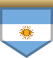
AR ArgentinaAM Armenia
AW Aruba
AU Australia
AT Austria
AZ Azerbaiyán
BS Bahamas
BD Bangladés
BB Barbados
BH Baréin
BE Bélgica
BZ Belice
BJ Benín
BM Bermudas
BY Bielorrusia
BO Bolivia
BA Bosnia y Herzegovina
BW Botsuana
BR Brasil
BN Brunéi
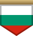
BG BulgariaBF Burkina Faso
BI Burundi
BT Bután
CV Cabo Verde
KH Camboya
CM Camerún
CA Canadá
QA Catar
TD Chad
CL Chile
CN China
CY Chipre
VA Ciudad del Vaticano
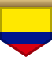
CO Colombia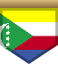
KM ComorasCG Congo
KP Corea del Norte
KR Corea del Sur
CI Costa de Marfil
CR Costa Rica
HR Croacia
CU Cuba
CW Curazao
DK Dinamarca
DM Dominica
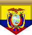
EC EcuadorEG Egipto
SV El Salvador
AE Emiratos Árabes Unidos
ER Eritrea
SK Eslovaquia
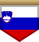
SI EsloveniaES España
EE Estonia
SZ Esuatini
ET Etiopía
PH Filipinas
FI Finlandia
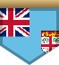
FJ FiyiGA Gabón
GM Gambia
GE Georgia
GH Ghana
GI Gibraltar
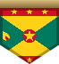
GD GranadaGR Grecia
GL Groenlandia
GU Guam
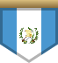
GT GuatemalaGG Guernsey
GN Guinea
GQ Guinea Ecuatorial
GW Guinea-Bisáu
GY Guyana
HT Haití
HN Honduras
HK Hong Kong
HU Hungría
IN India
ID Indonesia
IQ Irak
IR Irán
IE Irlanda
BV Isla Bouvet
IM Isla de Man
CX Isla de Navidad
NF Isla Norfolk
IS Islandia
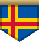
AX Islas AlandKY Islas Caimán
CC Islas Cocos (Keeling)
CK Islas Cook
FO Islas Feroe
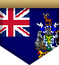
GS Islas Georgias del Sur y Sandwich del SurFK Islas Malvinas
MP Islas Marianas del Norte
MH Islas Marshall
PN Islas Pitcairn
SB Islas Salomón
TC Islas Turcas y Caicos
UM Islas Ultramarinas Menores de EE. UU.
VG Islas Vírgenes Británicas
VI Islas Vírgenes de EE. UU.
IL Israel
IT Italia
JM Jamaica
JP Japón
JE Jersey
JO Jordania
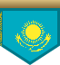
KZ KazajistánKE Kenia
KG Kirguistán
KI Kiribati
XK Kosovo
KW Kuwait
LA Laos
LS Lesoto
LV Letonia
LB Líbano
LR Liberia
LY Libia
LI Liechtenstein
LT Lituania
LU Luxemburgo
MO Macao
MK Macedonia del Norte
MG Madagascar
MY Malasia
MW Malaui
MV Maldivas
ML Malí
MT Malta
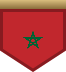
MA MarruecosMQ Martinica
MU Mauricio
MR Mauritania
MX México
FM Micronesia
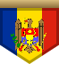
MD MoldaviaMC Mónaco
MN Mongolia
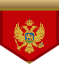
ME MontenegroMS Montserrat
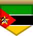
MZ MozambiqueMM Myanmar (Birmania)
NA Namibia
NR Nauru
NP Nepal
NI Nicaragua
NE Níger
NG Nigeria
NU Niue
NO Noruega
NC Nueva Caledonia
NZ Nueva Zelanda
OM Omán
NL Países Bajos
PK Pakistán
PW Palaos
PS Palestina
PA Panamá
PG Papúa Nueva Guinea
PY Paraguay
PE Perú
PF Polinesia Francesa
PL Polonia
PT Portugal
PR Puerto Rico
GB Reino Unido
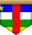
CF República CentroafricanaCZ República Checa
CD República Democrática del Congo
DO República Dominicana
RW Ruanda
RO Rumania
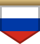
RU Rusia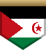
EH Sáhara OccidentalWS Samoa
AS Samoa Americana
KN San Cristóbal y Nieves
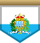
SM San MarinoVC San Vicente y las Granadinas
LC Santa Lucía
ST Santo Tomé y Príncipe
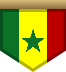
SN SenegalRS Serbia
SC Seychelles
SL Sierra Leona
SG Singapur
SX Sint Maarten (Países Bajos)
SY Siria
SO Somalia
LK Sri Lanka
ZA Sudáfrica
SD Sudán
SS Sudán del Sur
SE Suecia
CH Suiza
SR Surinam
SJ Svalbard y Jan Mayen
TH Tailandia
TW Taiwán
TZ Tanzania
TJ Tayikistán
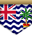
IO Territorio Británico del Océano ÍndicoTF Territorios Australes Franceses
TL Timor Oriental
TG Togo
TK Tokelau
TO Tonga
TT Trinidad y Tobago
TN Túnez
TM Turkmenistán
TR Turquía
TV Tuvalu
UA Ucrania
UG Uganda
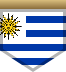
UY UruguayUZ Uzbekistán
VU Vanuatu
VE Venezuela
VN Vietnam
WF Wallis y Futuna
YE Yemen
DJ Yibuti
ZM Zambia
ZW Zimbabue